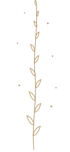

Hi, I'm Katie
For most of my life I felt like there was something wrong with me. I felt everything deeply, my nervous system was easily overwhelmed, and the usual advice to think differently or push through never worked.
Somatic work changed that. Learning to listen to my body and the felt sense opened doors that thinking alone never could. It didn't fix me, because I was never broken. It helped me understand myself.
Now I offer that same gentle, curious space to others navigating anxiety, burnout, and feeling disconnected.
Training and experience
- Compassion Method Consultant
- Embodied Processing Practitioner
- Lots of lived experience
What it's like to work with me
My style is gentle, curious, and open. There's no script, and there isn't one set way we begin.
Understanding your nervous system
We might start with some psychoeducation about the nervous system: how past adaptations can affect our current life, and what it means to begin building a sense of internal safety.
Sensing what's inside
We might begin exploring your interoception, your ability to notice and sense what is happening within your body, and gently explore where you are within your window of tolerance and your capacity to be with your experiences.
Naming what you feel
This might include learning to name what you're feeling, and beginning to recognize emotions not just as thoughts or words, but as sensations in the body.
The felt sense of being you
We might explore your self-awareness, and begin to notice the felt sense of what it's like to be you as you share your experiences.
As we explore, different parts of you may show up: a part that keeps pushing, a part that worries, a younger part that still needs comfort. There's no need to push any of them away.
All parts welcome.
Because so many of us have learned to disconnect from ourselves.
We keep going.
We push through.
We live in our heads.
We run on empty.
We adapt to what is happening around us while losing touch with what is happening within us.
Somatic work offers an opportunity to begin coming back.
Back into your body.
Back into your experience.
Back into relationship with yourself.
And what is embodiment?
Embodiment isn't about being calm all the time or being perfectly connected to your body.
It's about becoming more able to notice what is happening within you (your sensations, emotions, impulses, needs, boundaries, and responses) and staying connected to yourself as you experience them.
It's learning to listen to your body without immediately needing to fix, change, judge, or override what you find.
Over time, this awareness can become something you don't just understand intellectually, but something you begin to live. You begin to know yourself from the inside.
We go at a pace that honors your capacity. There's no need to force yourself into an experience before you're ready.
The work is not about getting somewhere else. It's about becoming more fully here, with yourself.

I'll meet you right where you are.
Ready to explore?
Start with a free 30-minute intro call. No pressure, just a conversation.
Book a free intro call